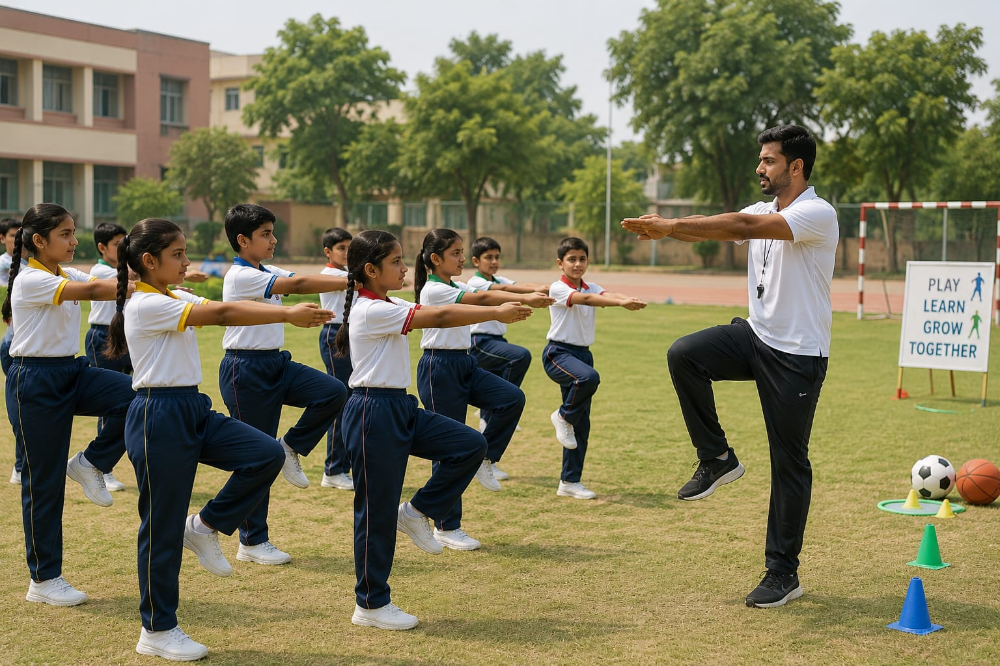

- A Physical Education Teacher teaches students different sports, games, and exercises.
- They help students become physically fit and stay healthy.
- They also organize sports events and encourage students to play as a team.
- They guide students who are interested in sports.
- 👉 In simple words: Physical Education Teachers teach sports, physical fitness, and healthy habits to students.
Physical Education Teacher
🧑🎨 What Do They Do?

🎓 How to Become a Physical Education Teacher
After completing Class 12, you can study physical education, sports science, and teaching through bachelor's degree courses.
B.P.E.S. (Bachelor of Physical Education and Sports)
Duration: 3 to 4 Years
Eligibility: Class 12 pass
Exam: Merit-based or University Entrance Exam
B.Sc. in Sports Science
Duration: 3 Years
Eligibility: Class 12 pass
Exam: Merit-based or University Entrance Exam
B.Sc. in Physical Education
Duration: 3 Years
Eligibility: Class 12 pass
Exam: Merit-based or University Entrance Exam
📝 Exam Details
(Click on the exam name to see full details)
CUET University Entrance Exams Merit-Based AdmissionAdmission depends on the university. Some colleges admit students through entrance exams, while others offer admission based on Class 12 marks.
After graduation, you can study professional physical education courses to become a Physical Education Teacher.
Bachelor of Physical Education (B.P.Ed.)
Duration: 2 Years
Eligibility: Bachelor's degree
Exam: University Entrance Exam or Merit-Based Admission
Master of Physical Education (M.P.Ed.)
Duration: 2 Years
Eligibility: B.P.Ed.
Exam: University Entrance Exam or Merit-Based Admission
📝 Additional Qualification
(Click on the exam name to see full details)
University Entrance Exams Merit-Based Admission Teacher Eligibility Test (TET / CTET) UGC-NET (For College Teaching)Note: To become a Physical Education Teacher in many government schools, you may also need to qualify the required Teacher Eligibility Test (TET/CTET) or other recruitment examinations, depending on the state and school. For teaching in colleges or universities, additional qualifications such as UGC-NET may be required.
Note:
Age limits, marks, and admission process may vary depending on the college or state.
These courses are available in many colleges and universities across India.
You can choose colleges based on your location, budget, and entrance exams.
🏛️ Top Colleges for Physical Education
(Tap on a college to view the details)
After Class 12 (Bachelor's Degrees)
Lakshmibai National Institute of Physical Education (LNIPE), Gwalior Indira Gandhi Institute of Physical Education & Sports Sciences (IGIPESS), New Delhi Symbiosis School of Sports Sciences, Pune Amity School of Physical Education & Sports Sciences, Noida Lakshmibai National College of Physical Education, ThiruvananthapuramAfter Graduation (Master's Degrees)
Netaji Subhas National Institute of Sports (NSNIS), Patiala Lakshmibai National Institute of Physical Education (LNIPE), Gwalior Indira Gandhi Institute of Physical Education & Sports Sciences (IGIPESS), New Delhi Bharathidasan University, Tiruchirappalli Mahatma Gandhi University, KottayamSTEP 1
Imagine you are working as a Physical Education Teacher in a school.
STEP 2
You start the day by teaching students warm-up exercises and simple fitness activities.
STEP 3
You teach different sports and games like football, cricket, volleyball, basketball, and athletics.
STEP 4
You encourage students to stay active, play fairly, and work together as a team.
STEP 5
You organize sports events and help students prepare for school competitions.
STEP 6
If you enjoy sports, fitness, teaching, and helping students stay healthy, this career may suit you.
🏫
Schools
Teach sports, games, and physical education to students.
🎓
Colleges & Universities
Teach physical education and sports-related subjects to college students.
🏅
Sports Academies
Train students and help them improve their sports skills.
🏟️
Sports Training Centres
Coach students and athletes in different sports and fitness activities.
💪
Fitness Centres
Teach fitness exercises and help people stay healthy and active.
🏃
Sports Clubs
Organize sports activities and train players of different age groups.
🏛️
Government Sports Departments
Promote sports, physical education, and fitness through government programs.
(Click Yes or No for each question)
1. Have you ever heard about Physical Education?
2. Do you know why physical education is important for students?
3. Are you interested in learning about health, fitness, nutrition, and sports?
4. Would you like to do a job where you teach sports, games, and physical fitness to students?
5. Imagine you are a Physical Education Teacher. Your job is to teach sports, games, and exercises, help students stay fit, and encourage them to lead a healthy lifestyle. Does this excite you?